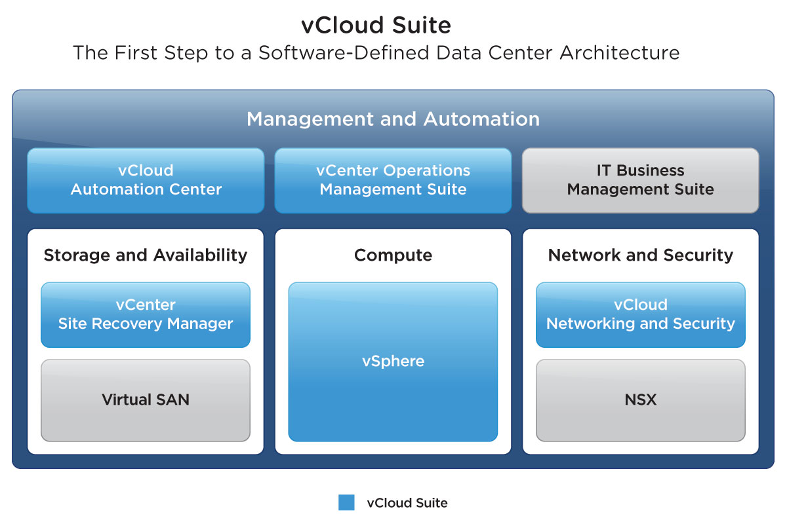
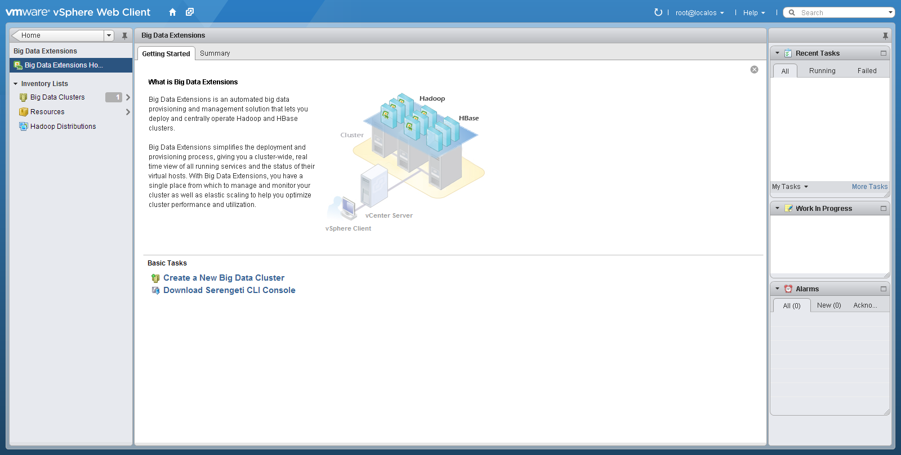

In 2013, I became an Interaction Designer in VMware's R&D department. I work on the vCloud Suite, vSphere Big Data Extensions, and product UX Design Standards.

vCloud Suite
I am the lead designer for the installation, upgrade, and patching of the vCloud Suite. This work is a blend of qualitative user research, design, and prototyping for future-facing products.
Note: My designs for this project are not yet public.

UX Design Standards
Along with several other team members, I work on creating new UX design standards for vSphere and its plugin community, as well as redesigning existing products to be more consistent with standards.
Note: My designs for this project are not yet public.

Big Data Extensions
I recently redesigned vSphere Big Data Extensions to better fit with VMware's UX Design Standards.
Note: My designs for this project are not yet public.